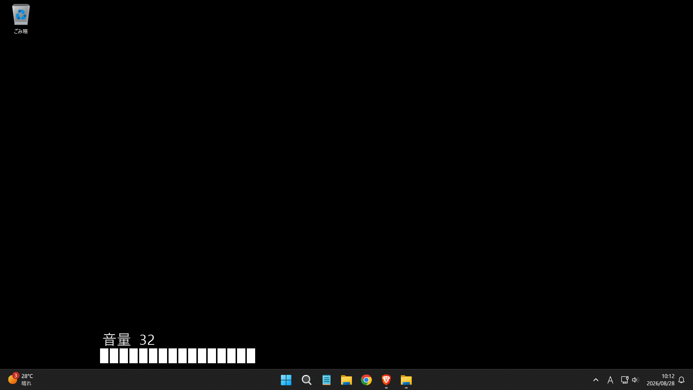
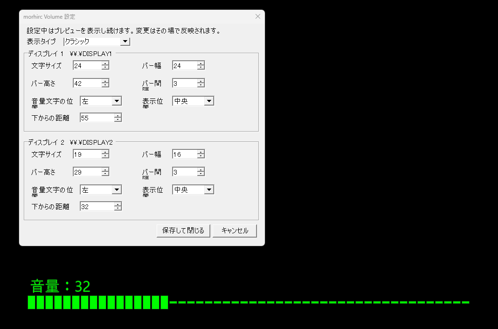

VolScreenとは
VolScreenは、Windowsの音量変更を 画面上にシンプルなOSDで表示する軽量ツールです。
インストール不要で、
VolScreen.exe を起動するだけで使用できます。
デュアルディスプレイにも対応し、 ディスプレイごとに表示サイズや位置を個別設定できます。
主な機能
音量をOSD表示
Windowsの音量を変更すると、 現在の音量を画面上に表示します。
デュアルディスプレイ対応
複数ディスプレイ環境でも使用でき、 ディスプレイごとに設定を分けられます。
表示サイズを調整
文字サイズ、バーの幅・高さ・間隔を 好みに合わせて調整できます。
表示位置を調整
OSDの表示位置や、 画面下端からの距離を調整できます。
2種類の表示スタイル
ダーク表示とクラシック表示から選択できます。
ライブプレビュー
設定変更中に実際の表示を確認しながら調整できます。
タスクトレイ常駐
起動後はタスクトレイに常駐し、 設定画面や終了操作を行えます。
インストール不要
セットアップ不要で、 EXEファイルを任意の場所から直接起動できます。
画面

音量変更時のOSD表示

ディスプレイごとの設定とライブプレビュー
使い方
VolScreen.exeを起動します。- Windowsの音量を変更します。
- 画面上に現在の音量がOSD表示されます。
- タスクトレイのVolScreenアイコンから設定画面を開きます。
- 各ディスプレイの表示方法を好みに合わせて調整します。
終了する場合は、 タスクトレイのVolScreenアイコンから終了してください。
対応環境
アンインストール
VolScreenを終了したあと、
VolScreen.exe を削除してください。
インストール処理は行っていないため、 アンインストーラーはありません。
ビルド
GitHubリポジトリには、 EXE生成用のソースとスクリプトも含まれています。
EXEを作る.cmd を実行すると、
同じフォルダに VolScreen.exe を生成できます。
Download / Source
最新版、更新履歴、ソースコードは GitHub上の公式リポジトリから確認できます。